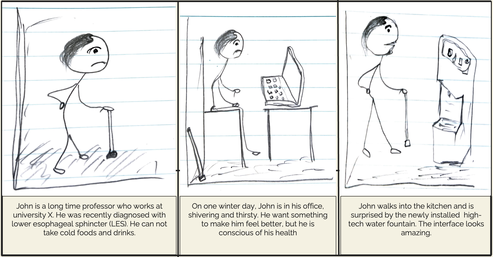
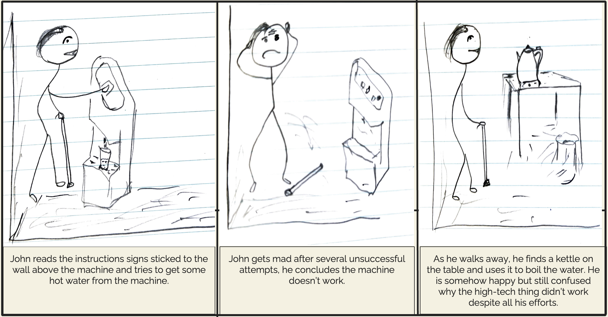
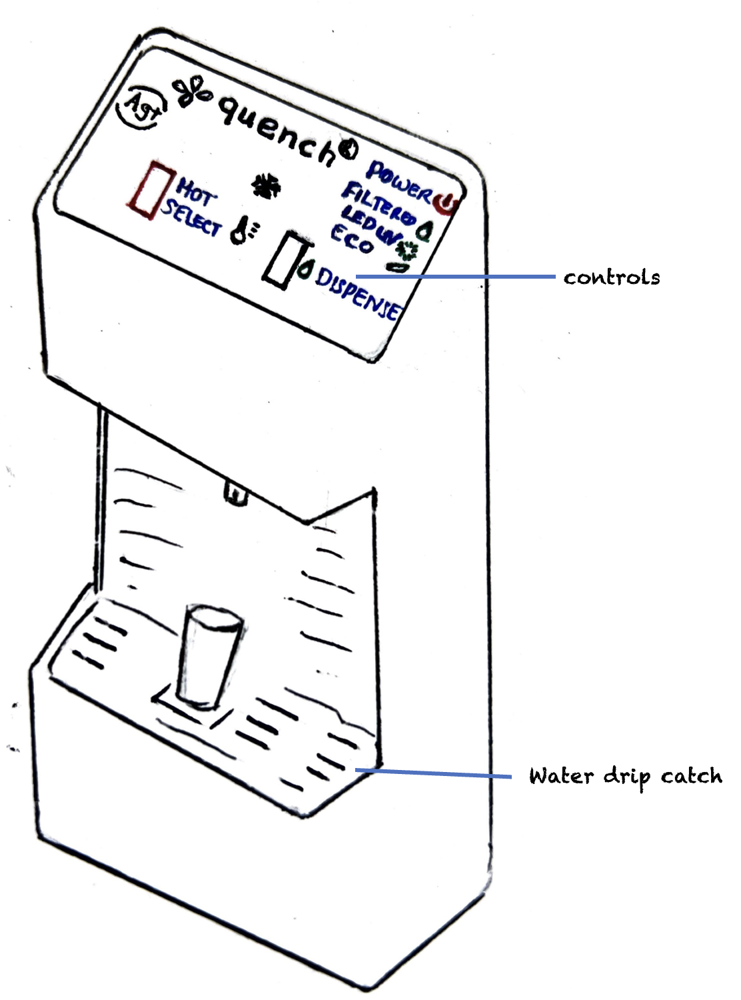
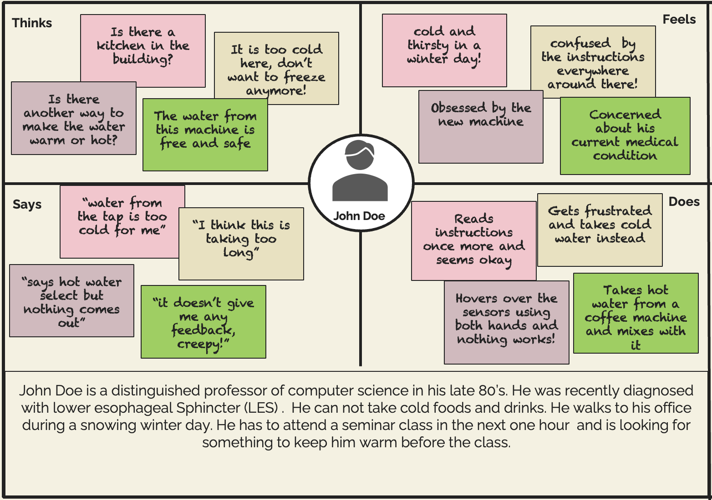
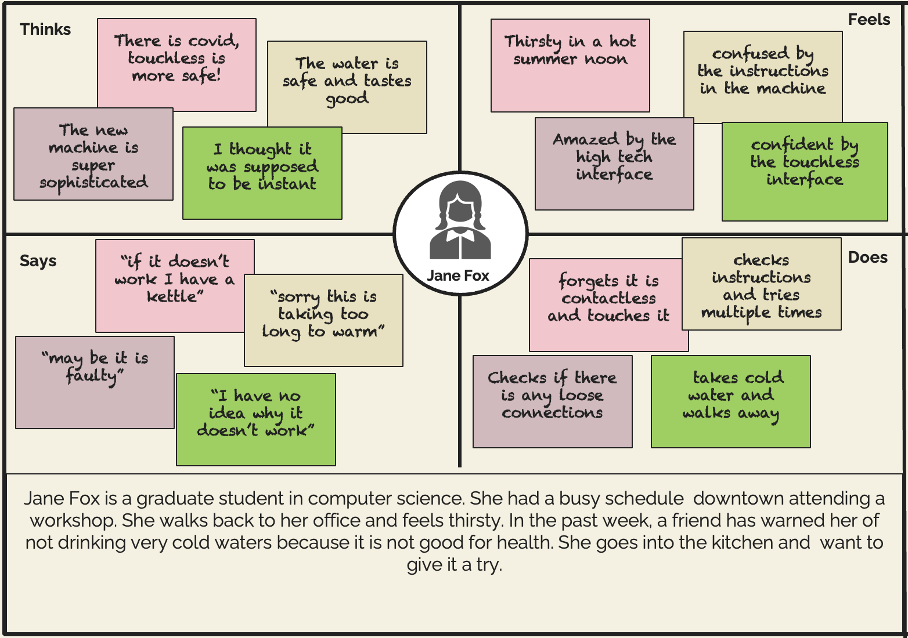
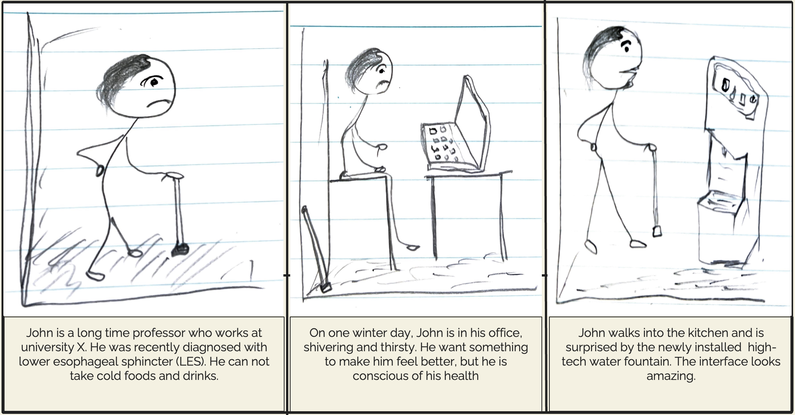
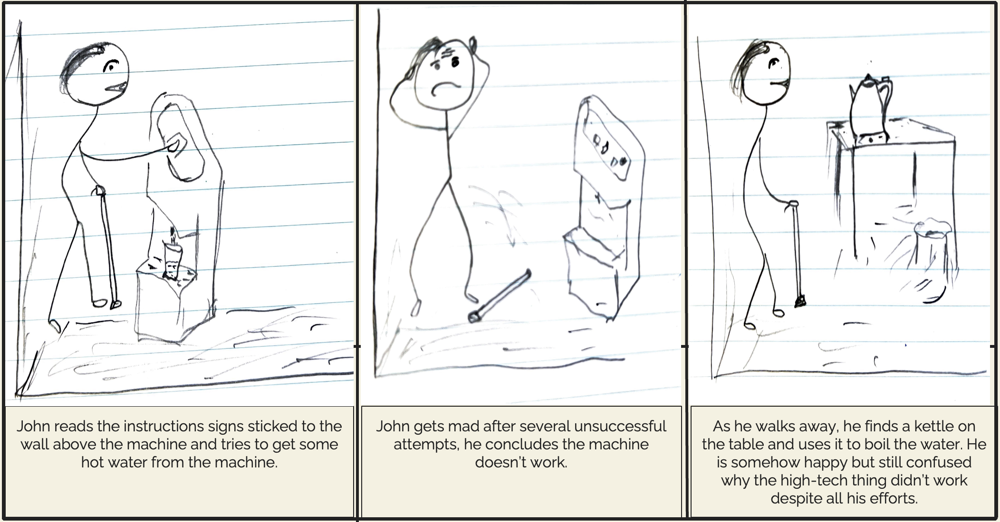

Storyboards
The storyboard below follows the entire interaction journey of the John Doe's persona as he interacts with the newly installed water fountain in the kitchen
 This project explores creating realistic personas and storyboarding user journeys that accurately capture complete user experiences as they interact with a chosen interface. The user interaction insights used in this project were obtained by observing the natural interactions of users and interviewing said users.
The interface studied in this project is that of a water fountain in the kitchen, this interface is publicly accessible and situated in an open area typically designated for staff and graduate students in the computer science department. This study was focused on the hot drinking water experience of users that may interact with this interface. The vital interactive components in this interface are the hot water sensor option and the dispense option as illustrated in the diagram below.
The empathy maps below represent two user personas: John Doe and Jane Fox.
 The storyboard below follows the entire interaction journey of the John Doe's persona as he interacts with the newly installed water fountain in the kitchen
 